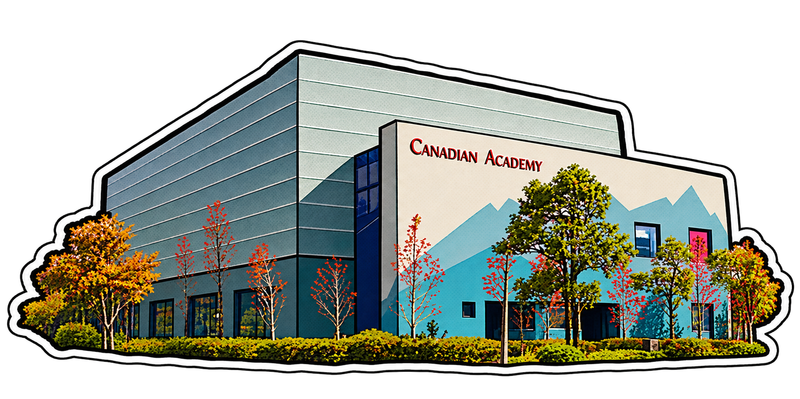
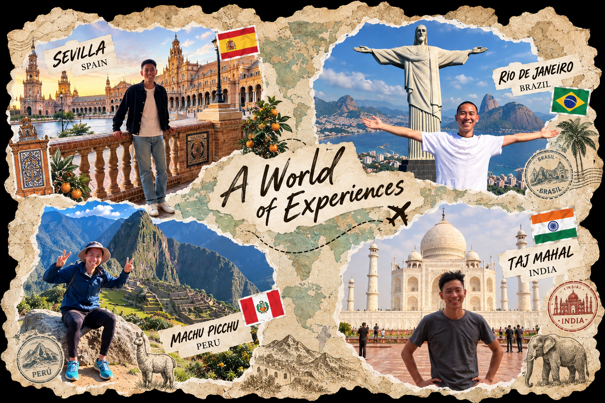

Grade 2の頃、日本の学校からインターナショナルスクールへの転校を考え、入学に向けた英語の対策からお願いしました。入学までの準備には苦労しましたが、子どもの理解度に合わせて丁寧にサポートしていただき、無事に合格することができました。その後も継続してお願いしており、現在は英語と数学を中心に、学校で必要な科目を幅広く見ていただいています。子どもの成長を長く見ていただいているので、その時々の課題や必要なことを理解してくださっているのがとても心強いです。We first asked for support when our child was in Grade 2 and preparing to transfer from a Japanese school to an international school. The preparation was challenging, but with careful support tailored to our child's level, they were able to gain admission. We have continued working together ever since, and now receive support across a range of school subjects, particularly English and Math. Having someone who has supported our child over the years and understands their strengths and challenges has been incredibly reassuring.
インター生・帰国子女
専門の家庭教師1-on-1 tutoring for
international school students
インター卒業生 × 世界最高峰のコンサル出身の講師が
学習支援から進路設計まで、成長を長期的な視点でサポートAn international school graduate and former consultant at a leading global firm,
supporting students from everyday learning to future planning—with a long-term perspective.
小学校から高校まで神戸のインターナショナルスクールCanadian Academyで過ごし、早稲田大学（国際コース：理工学部）を卒業後、ユニバーシティカレッジロンドン（都市計画学科）を修了。外資系コンサルティングファーム（マッキンゼー・ローランドベルガー・PwC）を経て、Caminoを設立。Studied at Canadian Academy, an international school in Kobe, from elementary through high school, graduated from Waseda University, and earned a master's at University College London. Worked at McKinsey, Roland Berger, and PwC before founding Camino.
講師について詳しく →More about the tutor →こんなお悩みありませんか？Does your child struggle with any of these?
Caminoならではの5つの強みWhat makes Camino different
授業設計Lessons Designed by an International School Graduate
実体験として理解Lessons shaped by firsthand international school experience
一人ひとりに合わせるTailored to each student's subjects, pace, and schedule
リアルな進路支援Real-World Guidance from Professional Experience
ともに切り拓くHelping each student build a path toward who they want to become
日本語・英語を切り替えSwitching between Japanese and English to match each student’s needs
自分で考える力を鍛えるLearn to ask "why?" and develop real problem-solving skills
ご利用者様の声What people say
01
インター卒業生による授業設計Lessons designed by an international school graduate
インター卒業生による授業設計Lessons designed by an international school graduate
インターでは、英語力や知識だけでなく、自分の考えや意見を持ち、それをエッセイ、ディスカッション、プレゼンテーションなど、さまざまな形で表現する力が求められます。
一般的な塾では日本の学校向けのカリキュラムが中心となることも多く、インターで求められる学習スタイルや評価基準には十分に対応できないケースも少なくありません。インターで重視されるスキルや学習の基準を踏まえ、生徒一人ひとりの現在の課題だけでなく、今後必要となる力まで見据えて授業を設計します。
At international schools, students need more than English proficiency and subject knowledge — they need to develop their own ideas and opinions—and learn to express them through essays, discussions, presentations, and more.
Traditional Japanese cram schools (juku) are generally designed around the Japanese school curriculum, so they may not fully address the learning styles and assessment criteria used by international schools. Drawing on the skills and standards valued by international schools, I design lessons around not only each student's current challenges, but the skills they will need as they move forward.
02
完全オーダーメイド指導Fully tailored lessons
完全オーダーメイド指導Fully tailored lessons
個人授業だからこそできる、生徒一人ひとりのニーズに合わせた完全オーダーメイドの指導を提供しています。授業の進め方・スケジュール調整まで、個々のニーズに合わせ柔軟に対応します。
- 「英語力に合わせて、日本語も交えながら説明してほしい」
- 「授業は詰め込みすぎず、理解度を見ながらゆっくり進めてほしい」
- 「30分ごとを目安に、短い休憩を入れてほしい」
- 「普段は数学中心で、エッセイ課題がある時はそちらを優先してほしい」
など、学習スタイルから科目まで柔軟に対応します。また、定期試験前に集中的に授業を増やしたい、学校行事の振替休日に午前中から授業を受けたい、といったスケジュール面のご要望にも、可能な限り対応します。
Because I teach one-on-one, every lesson can be tailored to the student's individual needs. From lesson style to scheduling, I adapt flexibly to each student's needs.
- “Explain at my child’s English level, using some Japanese where it helps.”
- “Don’t cram — move at a slower pace and check understanding as you go.”
- “Take a short break roughly every 30 minutes.”
- “Usually math, but prioritise essays whenever one is due.”
I adapt everything from the learning style to the subject itself. I also accommodate scheduling needs wherever possible, such as extra sessions before exams or a morning lesson on a school make-up holiday.
03
卒業を見据えた進路支援Path & Career Support with the Future in View
卒業を見据えた進路支援Path & Career Support with the Future in View
目の前の勉強だけでは、時に「なぜ今これを頑張るのか」を見失ってしまうことがあります。だからこそ、「自分にはどのような選択肢があるのか」を知り、今の学びを将来につなげて考えることが大切だと考えています。
インター卒業生としての経験やネットワーク、自身の進学・就業経験を活かし、国内外の大学・大学院から、その先のキャリアまで、生徒一人ひとりの将来の選択肢を広げることを見据えてサポートします。
When you focus only on the work in front of you, it's easy to lose sight of why you're working so hard right now. That's why it's important to understand your options and connect what you're learning today to where you want to go tomorrow.
Drawing on my experience as an international school graduate, as well as my own path through higher education and work, I support students with an eye on expanding their future options — from universities and graduate schools in Japan and abroad to their future careers.
04
日英バイリンガル対応Japanese–English bilingual tutoring
日英バイリンガル対応Japanese–English bilingual tutoring
授業は日本語・英語のどちらでも対応します。生徒の理解度や英語力に合わせて言語を柔軟に使い分け、英語での理解がまだ難しい段階では日本語をベースにしながら、無理なく徐々に英語での学習へ移行していきます。
幼少期から日本語と英語の両方で学んできた自身の経験をもとに、二つの言語を適切に使い分けながら、両言語を使いこなせるバイリンガルとして成長していくための学び方についてもアドバイスします。
Lessons are available in either Japanese or English. I switch flexibly between the two to match each student's level of understanding and English proficiency — leaning on Japanese while English is still difficult, gradually shifting toward learning in English as their confidence grows.
Having learned in both languages myself since childhood, I also advise on how to use each language appropriately and develop the confidence to use both languages comfortably and effectively.
05
楽しく思考力を養うDeveloping problem-solving skills — and enjoying the process
楽しく思考力を養うDeveloping problem-solving skills — and enjoying the process
問題解決力は、学業だけでなく、人生のあらゆる場面で必要となる力です。インターでは、自分で問いを立て、物事を多角的に捉え、解決策を考えることが日常的に求められます。こうした力こそが、インター卒業後にさまざまな分野で活躍する人が多い理由の一つだと考えています。一方で、身につけるのが難しい力でもあります。
だからこそ、授業では「好奇心」と「構造化して考える力」を大切にしています。自分の興味や「なぜ？」という問いが、学ぶことへの内発的なモチベーションにつながります。そして、その問いに答えるには、考えを整理し、筋道を立てて考える力が必要です。これは生まれ持った才能ではなく、身につけられるスキルです。家庭教師としては少し珍しい、外資系コンサルティングファーム出身の講師が、こうした思考法を子ども向けにわかりやすく落とし込み、単なる知識ではなく、生徒自身が一生使える「思考の道具」として伝えることが、Caminoならではの特徴です。
Problem-solving isn't just a school skill—it's something we use throughout life. At international schools, students are encouraged to ask their own questions, look at things from multiple angles, and work toward solutions. I believe this is one reason so many international school graduates go on to thrive across a wide range of fields. It's also a skill that can be surprisingly difficult to develop.
That's why my lessons are built around curiosity and structured thinking. Students' own interests and "why?" questions become a natural source of motivation — and exploring those questions requires students to organize their thoughts and reason through problems step by step. This isn't an innate talent—it's a skill that can be developed. Unlike most private tutors, I also bring a background in global management consulting, and I translate those problem-solving methods into approaches that students can actually understand and apply — so they gain not just knowledge, but thinking tools they can carry with them for life. That's what makes Camino different.
目的に合わせて選べる学びのプランLearning plans built around your goals
無料体験レッスン（60分）Free trial lesson (60 min)
家庭教師Private tutoring
全科目対応。IB科目は対応科目を要相談。All subjects. IB subjects are also available upon request.
※ 1.5時間・2時間など長めのレッスンも同じ時間単価でご利用いただけます* Longer sessions (1.5 or 2 hours) are available at the same hourly rate.
申し込むApply英会話レッスンEnglish conversation
年齢・レベル不問。大人の方も歓迎。インター入学前の生徒とは英語での発話や面接を意識したテーマでの会話を取り入れています。TOEFL・IELTS・TOEIC対策にも対応します。All ages and levels welcome—including adults. For students preparing to enter an international school, lessons focus on speaking skills and interview preparation. TOEFL, IELTS and TOEIC preparation also available.
その他の詳細Other details
各項目をタップすると開きますTap each item to open
お支払い方法Payment method
- 毎月末に、その月分の請求書をLINEまたはメールでお送りします。At the end of each month, we send an invoice for that month via LINE or email.
- 銀行振込：翌月10日までにお振込みください（振込手数料はご負担ください）。Bank transfer: payment is due by the 10th of the following month. (transfer fees are the payer's responsibility).
振替レッスンMake-up lessons
- 24時間前までにご連絡いただいた場合、振替レッスンを行います。If you notify us at least 24 hours in advance, we will arrange a make-up lesson.
- 振替は、お休みされたレッスンから2ヶ月以内にご予約ください。Make-up lessons must be taken within two months of the missed lesson.
- こちらの都合でレッスンを中止した場合は、振替日を再設定します。If we need to cancel a lesson, we will reschedule it.
- 振替の振替（二重振替）は承っておりません。We do not offer make-ups for missed make-up lessons.
キャンセルポリシーCancellation policy
- やむを得ない理由（病気・けが・不幸・災害など）を除き、キャンセルをご希望の場合は1週間前までにご連絡ください。Unless there are unavoidable circumstances (illness, injury, bereavement, disaster, etc.), please notify us at least one week in advance if you wish to cancel.
- 3週間以上の長期のお休みの場合は、1ヶ月前までにご連絡ください。For a break of three weeks or more, please notify us at least one month in advance.
- お支払い済みの授業料は、原則として返金いたしかねます。お休みされた場合は、振替レッスンをご予約ください。Tuition already paid is generally non-refundable. If you are absent, please book a make-up lesson.
高島 宏樹Hiroki Takashima
小学校から高校までを神戸のインターナショナルスクール Canadian Academy で過ごし、早稲田大学（国際コース：理工学部）を経て UCL（ロンドン大学）で都市計画を修了。マッキンゼー・ローランド・ベルガー・PwC で約7年間コンサルティングに従事した後、Camino を設立。From elementary through high school, I studied at Canadian Academy, an international school in Kobe, then went on to Waseda University and UCL (University College London), where I studied urban planning. After about seven years of consulting at McKinsey, Roland Berger, and PwC, I founded Camino.

インターナショナルスクールへDiscovering international school
日本の幼稚園に通っていた頃、インターのサマースクールに参加したことがきっかけに。新鮮な学びと環境に惹かれ、最初は不合格となったものの翌年に再挑戦し、神戸の Canadian Academy へ入学。世界に興味を持つ原点となる。While attending a Japanese kindergarten, I joined an international school's summer program — an experience that changed everything. Drawn to its way of learning, I applied. Turned down the first time, I tried again the next year and got into Canadian Academy in Kobe — the starting point of my curiosity about the world.
IB（国際バカロレア）で学ぶStudying the IB
小学校から高校までインターで学び、IBではHLでMath・Physics・Economics・Japanese、SLでLanguage and Literature・Chemistryを履修。多様な文化や価値観に触れ、広い視野を育む。I studied at an international school from elementary through high school, taking Math, Physics, Economics and Japanese at Higher Level, and Language and Literature and Chemistry at Standard Level in the IB — growing up among many cultures and perspectives.
早稲田 → UCL（ロンドン大学）Waseda → UCL
早稲田大学理工学部の国際コースを経て、UCLで都市計画を学ぶ。オーストリアのまちづくり課と連携し、「女性が歩きやすい街の作り方」をテーマに卒業論文を執筆。その過程で研究をサポートしてくれたロンドンの建築会社でのインターンも経験する。次第に都市をデザインすること以上に、都市が抱える「課題を解決すること」への関心が強くなる。デザインに限らず、多様な視点やアプローチから取り組みたいと考え、コンサルティングの道を志す。After the International Course at Waseda's Faculty of Science & Engineering, I studied urban planning at UCL. Working with a city-planning office in Austria, I wrote my thesis on "how to design a walkable city for women," and interned at a London architecture firm that supported the research. Over time I grew more interested in solving cities' problems than in designing them — and, wanting to approach challenges from many perspectives, I set my sights on consulting.
世界を旅するTravelling the world
学びの合間に、ヨーロッパや南米などをバックパッカーとして巡る。異なる文化・人・価値観に触れ、見た景色や出会いのすべてが、今の自分をつくっている。Between studies and jobs, I backpacked through Europe, South America and beyond. The cultures, people and views I encountered along the way have shaped who I am today.

コンサルティングConsulting
外資系戦略コンサルティングファームにて、スマートシティの政府プロジェクトや自動運転などの民間プロジェクトに従事。興味のあった都市計画とも再びつながり、欧州系・米系ファームに約7年間勤める。At global strategy consulting firms, I worked on everything from government-led smart-city initiatives to private-sector autonomous-driving projects — reconnecting with my interest in urban planning over about seven years at European and U.S. firms.
コンサル × 教育で、新しい学びをConsulting × education, a new kind of learning
一度は志した教師の原点に立ち返り、米国の教員資格を取得。コンサルティングで培った、論理的に考え、問いを立て、答えを導く力を、学生が自身の進みたい道を切り拓くための力として伝えていきたい。そんな想いから、スペイン語で旅路を意味するCaminoと名付け、設立。Returning to my early aspiration of teaching, I earned a U.S. teaching certification. I wanted to pass on the ability I developed in consulting — to think logically, ask the right questions, and reach answers — as a tool for students to carve out their own path. With that in mind, I founded Camino, named after the Spanish word for "journey."
お問い合わせGet in touch
ご質問だけでも、無料体験レッスンのお申し込みでも、お気軽にどうぞWhether you have a quick question or would like to book a trial lesson, feel free to reach out.
送信しましたMessage sent
お問い合わせありがとうございます。2〜3営業日以内にご連絡いたします。Thank you for reaching out. We'll get back to you within 2–3 business days.